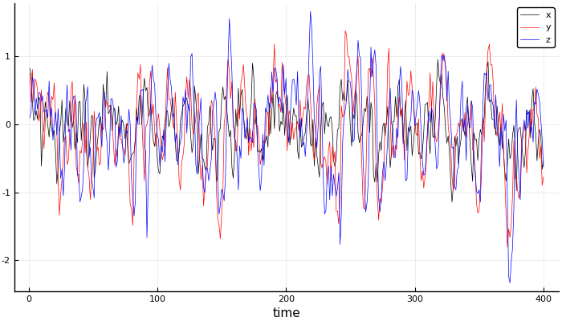
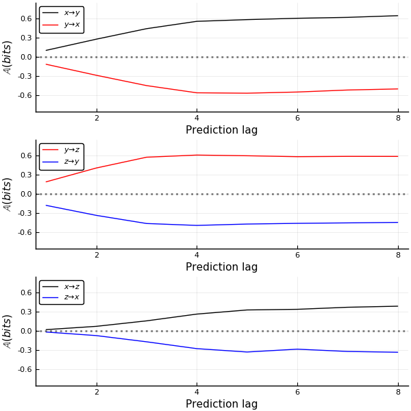

A brief tutorial on the predictive asymmetry test
Here’s an example of how to compute the predictive asymmetry test of causality from time series proposed by Haaga et al. The jupyter notebook was run with a Julia 1.2 kernel and using our package CausalityTools.jl (Note: Pending a 1.0 release, there may be breaking changes).
Let’s start by importing the necessary functions.
using CausalityTools, UncertainData
using StatsBase # statistical functions, e.g. mean
using Distributions # probability distributions
using Plots; pyplot() # use pyplot backend
using LaTeXStrings # enable TeX i pyplot
Some example data
Let’s create some example data with three dynamical variables coupled $x \to y \to z$.
npts = 400
y = rand(npts, 3)
N = Normal(0, 1)
a₁, a₂ = 0.7, 0.1
b₁, b₂ = 0.75, 0.2
c₁, c₂ = 0.6, 0.2
C₁₂, C₂₃ = 0.5, 0.5
ξ₁, ξ₂, ξ₃ = 0.3, 0.3, 0.3
for t in 5:npts
y[t,1] = a₁*y[t-1,1] - a₂*y[t-4,1] + ξ₁*rand(N)
y[t,2] = b₁*y[t-1,2] - b₂*y[t-4,2] + C₁₂*y[t-1,1] + ξ₂*rand(N)
y[t,3] = c₁*y[t-1,3] - c₂*y[t-3,3] + C₂₃*y[t-1,2] + ξ₃*rand(N)
end
x, y, z = [y[:, i] for i = 1:3]
labs = "x", "y", "z"
plot(1:npts, x, c = :black, label = "x", lw = .5,
xlabel = "time", ylabel = "", size = (700, 400))
plot!(1:npts, y, c = :red, label = "y", lw = .5)
plot!(1:npts, z, c = :blue, label = "z", lw = .5)

Predictive asymmetry test for causality
Now, we’ll try to see if we can recover the unidirectional relationships using the predictive asymmetry test. To compute the predictive asymmetry, we’ll use the transfer operator grid (Diego et al., 2019) transfer entropy test. To understand the parameters of the test, we need some background on transfer entropy:
Transfer entropy
Let’s say we have a source time series $S$ and a target time series $T$. For convenience, define
$$\begin{align}
T_f^{(k)} &= {(T(t+\eta_k), \ldots, T(t+\eta_2), T(t+\eta_1))} \newline
T_{pp}^{(l)} &= { (T(t), T(t-\tau_1), T(t-\tau_2), \ldots, T(t - \tau_{l - 1}))} \newline
S_{pp}^{(m)} &= {(S(t), S(t-\tau_1), S(t-\tau_2), \ldots, S(t-\tau_{m - 1}))}
\end{align}$$
Combining into a generalised delay reconstruction:
$$ \begin{align} \mathbb{E} = (T_f^{(k)}, T_{pp}^{(l)}, S_{pp}^{(m)}) \end{align} $$
With that, we have an embedding that we can use to compute transfer entropy:
$$ \begin{align} TE_{S \rightarrow T} = \int_{\mathbb{E}} P(T_f, T_{pp}, S_{pp}) \log_{2}{\left(\frac{P(T_f | T_{pp}, S_{pp})}{P(T_f | T_{pp})}\right)} \end{align} $$.
Deciding on test parameters
To organise our test, we can create an instance of a TransferOperatorGridTest, which has the following signature:
TransferOperatorGridTest(k::Int = 1, l::Int = 1, m::Int = 1, n::Int = 1,
τ::Int = 1, b = 2, estimator::TransferOperatorGrid = TransferOperatorGrid(),
binning_summary_statistic::Function = StatsBase.mean,
binning::RectangularBinning, ηs)
To get the full documentation, type ?TransferOperatorGridTest.
Parameter list
What’s important for us are
k,l, andm, which dictate the dimension of the delay reconstruction.- The
binning, which is aRectangularBinninginstance. ηsis/are the prediction lag(s).bis the base of the logarithm.- The
τparameter is the reconstruction delay, which only matters fork + l + m > 3.
With that in mind, let’s set up a very simple test.
# Use a three-dimensional delay reconstruction
k, l, m = 1, 1, 1
# Use a rectangular partition where the number of bin elements scale
# with the number of points (following Krakovska et al., 2018).
n_subdivisions = floor(Int, npts^(1/(k+l+m+1)))
binning = RectangularBinning(n_subdivisions)
# Compute the predictive asymmetry for η ranging from -8 to 8.
ηs = -8:8
te_test = TransferOperatorGridTest(k = k, l = l, m = m, binning = binning, ηs = ηs)
TransferOperatorGridTest(k = 1, l = 1, m = 1, n = 1, τ = 1, b = 2, estimator = TransferOperatorGrid(), binning_summary_statistic = mean, binning = RectangularBinning(4), ηs = -8:8)
Now, we can use this transfer entropy test as input to a PredictiveAsymmetryTest instance.
pa_test = PredictiveAsymmetryTest(predictive_test = te_test)
PredictiveAsymmetryTest{TransferOperatorGridTest}(predictive_test = TransferOperatorGridTest(k = 1, l = 1, m = 1, n = 1, τ = 1, b = 2, estimator = TransferOperatorGrid(), binning_summary_statistic = mean, binning = RectangularBinning(4), ηs = -8:8))
Applying the test
pa_xy = causality(x, y, pa_test)
pa_yx = causality(y, x, pa_test)
pa_yz = causality(y, z, pa_test)
pa_zy = causality(z, y, pa_test)
pa_xz = causality(x, z, pa_test)
pa_zx = causality(z, x, pa_test);
p_xy = plot(xlabel = "Prediction lag", ylabel = L"\mathbb{A} (bits)",
ylims = [-0.8, 0.8])
plot!(1:maximum(ηs), pa_xy, label = L"x \to y", c = :black)
plot!(1:maximum(ηs), pa_yx, label = L"y \to x", c = :red)
hline!([0], lw = 2, ls = :dot, α = 0.5, c = :black, label = "")
p_yz = plot(xlabel = "Prediction lag", ylabel = L"\mathbb{A} (bits)",
ylims = [-0.8, 0.8])
plot!(1:maximum(ηs), pa_yz, label = L"y \to z", c = :red)
plot!(1:maximum(ηs), pa_zy, label = L"z \to y", c = :blue)
hline!([0], lw = 2, ls = :dot, α = 0.5, c = :black, label = "")
p_xz = plot(xlabel = "Prediction lag", ylabel = L"\mathbb{A} (bits)",
ylims = [-0.8, 0.8])
plot!(1:maximum(ηs), pa_xz, label = L"x \to z", c = :black)
plot!(1:maximum(ηs), pa_zx, label = L"z \to x", c = :blue)
hline!([0], lw = 2, ls = :dot, α = 0.5, c = :black, label = "")
plot(p_xy, p_yz, p_xz, layout = grid(3, 1), size = (600, 600), legend = :topleft)

The direct influences $\mathbb{A}_{x \to y}$ and $\mathbb{A}_{y \to z}$ are both positive and of equal strength, while the indirect influence $\mathbb{A}_{x \to z}$ is weaker. In the non-causal direction, $\mathbb{A}_{y \to x}$, $\mathbb{A}_{z \to y}$ and $\mathbb{A}_{z \to x}$ are all negative. We thus recover the underlying directionality and relative strength of couplings.
The predictive asymmetry test is introduced in a paper available in preprint:
Haaga KA, Diego D, Brendryen J, Hannisdal B (2020). A simple test for causality in complex systems. https://arxiv.org/pdf/2005.01860.pdf